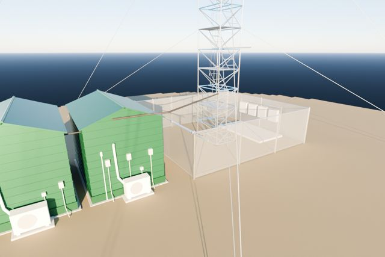
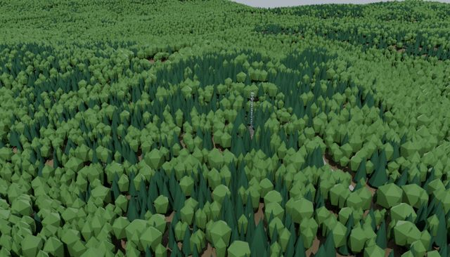

BNF Tower Explorer
An interactive 3D model of the AMF3 meteorological tower (S10) at the Bankhead National Forest site in northern Alabama. Click an instrument to see what it measures and find its data.

S10 tower site
The tower, its instruments, the fenced site and the forest within 100 m.
Open →

Full domain
The tower in the wider landscape: lidar-mapped forest, S13 and S14, roads, the Work Center and the M1 site.
Open →
Controls: right-drag to orbit, middle-drag to pan, scroll to zoom, click an instrument for details. On a touch screen, drag with one finger to orbit and pinch to zoom.